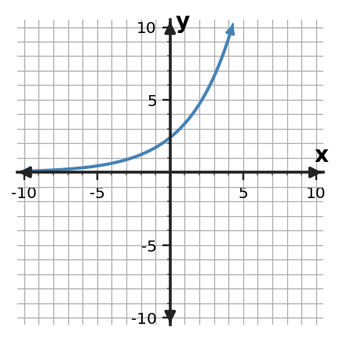

Recognizing Growth and Decay
Guided Notes
Use patterns, representations, and evidence to explain how the mathematics works.
Learning Target
Students will identify exponential relationships from patterns, tables, graphs, and situations.
- I can construct evidence from patterns, tables, graphs, and situations to support an exponential growth or decay relationship.
- I can apply repeated multiplication and constant ratios to exponential patterns.
- I can determine whether a relationship is exponential by checking how values change across representations.
Vocabulary / Key Notation Preview
exponential growth • exponential decay • constant ratio • growth factor • decay factor
Sort the vocabulary. Write each vocabulary word in the column that best matches what you know right now. You may move a word later.
| Know for sure | Recognize | Don't know yet |
|---|---|---|
What's to Come
DO NOT SOLVE IT YET.
Circle anything familiar, underline symbols, labels, conditions, data, or features that seem important, and write short notes about what you think may matter later.
Two quantities start at the same value. Study the shared table. Without naming a formal rule yet, describe how each column changes, predict the next value in each column, and explain which column is better described by repeated multiplication.
| step | A | B |
|---|---|---|
| 0 | 12 | 12 |
| 1 | 17 | 18 |
| 2 | 22 | 27 |
| 3 | 27 | 40.5 |
Let's Get Started
Skim the section. Record what catches your attention before you read closely.
| What I noticed | |
|---|---|
| What I predict | |
| What I wonder |
READ IN SHORT CHUNKS.
Annotate the words and visuals together. Underline evidence, circle or highlight bold vocabulary, label arrows, measurements, or important features, connect sentences to figures, and jot short questions or connections in the margins.
I can construct evidence from patterns, tables, graphs, and situations to support an exponential growth or decay relationship.
An exponential relationship is built from multiplicative change. Over equal input intervals, the output is multiplied by the same factor again and again. That is different from a linear relationship, where equal input intervals produce a constant additive difference. A table can make this distinction visible because you can compare one output with the next instead of relying only on the overall shape.
For exponential growth, the multiplier is greater than 1, so repeated multiplication makes the outputs increase. For exponential decay, the multiplier is between 0 and 1, so each new output is a fixed fraction of the previous output. The change in the actual amount does not stay constant: growth adds larger and larger amounts, while decay removes smaller and smaller amounts as the quantity shrinks.
Graphs and situations provide the same kind of evidence in a different form. A growth graph rises with an increasing steepness, while a basic decay graph falls toward a horizontal baseline. In a context, phrases such as "increases by the same percent each year" or "keeps the same percent of its value each period" point to repeated multiplication. Strong evidence comes from explaining the pattern of change, not merely naming the curve.
- In a table with equally spaced x-values, what calculation reveals the multiplicative pattern?
- How do the values of a growth factor and a decay factor differ?
- Why is "the outputs keep increasing" not enough evidence by itself to prove a relationship is exponential?
| Pattern | What stays constant? | Typical table check |
|---|---|---|
| Linear | Difference | $y_{next}-y_{current}$ |
| Exponential | Ratio / multiplier | $\frac{y_{next}}{y_{current}}$ |
Use equal input intervals before comparing differences or ratios. A constant ratio is the table fingerprint of exponential change.
Example 1: Use Table Evidence
Use the table to decide whether the relationship is exponential growth or exponential decay. State the constant ratio that supports your decision.
| x | y |
|---|---|
| 0 | $\displaystyle 3$ |
| 1 | $\displaystyle 6$ |
| 2 | $\displaystyle 12$ |
| 3 | $\displaystyle 24$ |
| 4 | $\displaystyle 48$ |
You Try It 1: Use Table Evidence
Use the table to decide whether the relationship is exponential growth or exponential decay. State the constant ratio that supports your decision.
| x | y |
|---|---|
| 0 | $\displaystyle 5$ |
| 1 | $\frac{15}{2}$ |
| 2 | $\frac{45}{4}$ |
| 3 | $\frac{135}{8}$ |
| 4 | $\frac{405}{16}$ |
Example 2: Read an Exponential Graph
Use the graph to decide whether the relationship shows exponential growth or decay. Give one graph feature that supports your decision.

You Try It 2: Read an Exponential Graph
Use the graph to decide whether the relationship shows exponential growth or decay. Give one graph feature that supports your decision.

Example 3: Translate Percent Change
A video is shared to 35% more people each hour. Use the repeated-percent behavior to justify an exponential model and identify the per-period multiplier.
You Try It 3: Translate Percent Change
A laptop keeps 82% of its value each year. State the multiplier and connect it to why a single exponential model is appropriate.
I can apply repeated multiplication and constant ratios to exponential patterns.
Repeated multiplication can be read as a chain. If a quantity is 6 and the constant ratio is $\frac{3}{2}$, then the next value is $6(\frac{3}{2})$, the value after that is $6(\frac{3}{2})(\frac{3}{2})$, and so on. The same multiplier appears because the same kind of change happens during every equal step.
The multiplier tells both direction and size of change. A growth factor such as $1.5$ means each output is 150% of the previous output, so it grows by 50% each step. A decay factor such as $0.8$ means each output keeps 80% of the previous output, so it decreases by 20% each step. The factor and the percent change are related, but they are not the same number.
Constant ratios work for fractions and decimals just as they do for whole numbers. When the arithmetic becomes less familiar, keep the structure visible: multiply the current term by the same factor, then check by dividing a later term by the term before it. This two-way check helps distinguish a true multiplicative pattern from a pattern that only looks roughly curved.
- What operation moves you from one term to the next in a multiplicative sequence?
- A decay factor is $0.72$. What percent of the previous amount is kept, and what percent is lost?
- How can division be used to check a proposed factor after you extend a sequence?
Factor $b\gt1$: growth. Example: $b=1.25$ means keep 100% and add 25% each period.
Factor $0\lt b\lt1$: decay. Example: $b=0.65$ means keep 65% and lose 35% each period.
Factor $b=1$: no multiplicative growth or decay; the output stays constant.
Example 4: Extend a Multiplicative Pattern
The sequence is $\displaystyle 6, 9, \frac{27}{2}, \frac{81}{4}, \ldots$ . Find the next two terms and explain whether the pattern shows exponential growth or decay.
You Try It 4: Extend a Multiplicative Pattern
The sequence is $\displaystyle 100, 80, 64, \frac{256}{5}, \ldots$ . Find the next two terms and explain whether the pattern shows exponential growth or decay.
I can determine whether a relationship is exponential by checking how values change across representations.
The same exponential relationship can appear as an equation, table, graph, or situation. In the basic form $y=ab^x$, the coefficient $a$ is the output when $x=0$ because $b^0=1$. The base $b$ is the per-unit multiplier. Those two pieces of structure should agree with the other representations: the table starts at $a$, consecutive outputs have ratio $b$, and the graph passes through $(0,a)$.
A representation is stronger evidence when its features agree with features in another representation. For example, an equation with $b=\frac{1}{2}$ predicts decay, and its table should halve over equal input steps. Its graph should move toward the horizontal axis as $x$ increases. If one representation shows a different starting value or a different multiplicative factor, the representations do not describe the same relationship.
Checking across representations is also a way to catch errors. A table may have one copied value that breaks the constant ratio, a graph may use the wrong intercept, or a context may describe additive change even though an exponential equation was proposed. Instead of trusting one form automatically, compare the structural evidence: starting value, multiplier, direction of change, and behavior over equal intervals.
- In $y=ab^x$, what graph and table feature is determined by $a$?
- What table feature should agree with the value of $b$?
- Suppose an equation has $b=0.6$ but its graph rises as x increases. What conflict should you investigate?
- Equation: identify $a$ and $b$ in $y=ab^x$.
- Table: check $y(0)$ and consecutive ratios.
- Graph: check the y-intercept, growth/decay direction, and curvature.
- Context: identify the starting amount and the repeated percent or multiplicative change.
Matching relationships should tell the same mathematical story in every form.
Example 5: Read Initial Value and Factor
Consider $y=4(\frac{3}{2})^x$. Decide whether the relationship represents exponential growth or decay. Identify the initial value and the growth or decay factor.
You Try It 5: Read Initial Value and Factor
Consider $y=9(\frac{2}{3})^x$. Decide whether the relationship represents exponential growth or decay. Identify the initial value and the growth or decay factor.
Example 6: Check Matching Representations
The equation is $y=6(\frac{3}{2})^x$. Use the table to determine whether it represents the same relationship. Give evidence from at least two rows.
| x | y |
|---|---|
| 0 | $\displaystyle 6$ |
| 1 | $\displaystyle 9$ |
| 2 | $\frac{27}{2}$ |
| 3 | $\frac{81}{4}$ |
You Try It 6: Check Matching Representations
The equation is $y=16(\frac{1}{2})^x$. Use the table to determine whether it represents the same relationship. Give evidence from at least two rows.
| x | y |
|---|---|
| 0 | $\displaystyle 16$ |
| 1 | $\displaystyle 8$ |
| 2 | $\displaystyle 4$ |
| 3 | $\displaystyle 2$ |
Summary
- Exponential relationships use repeated multiplication over equal input intervals.
- A factor greater than 1 gives growth; a factor between 0 and 1 gives decay.
- Constant ratios in tables, exponential shape in graphs, repeated percent change in contexts, and the form $y=ab^x$ should agree across representations.
Common Mistakes
- Using constant differences as evidence for an exponential relationship.
- Confusing a decay factor such as 0.82 with an 82% decrease; 0.82 means 82% remains, so the decrease is 18%.
- Naming a graph as exponential from shape alone without checking multiplicative structure.